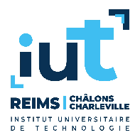
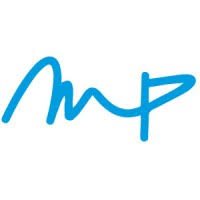
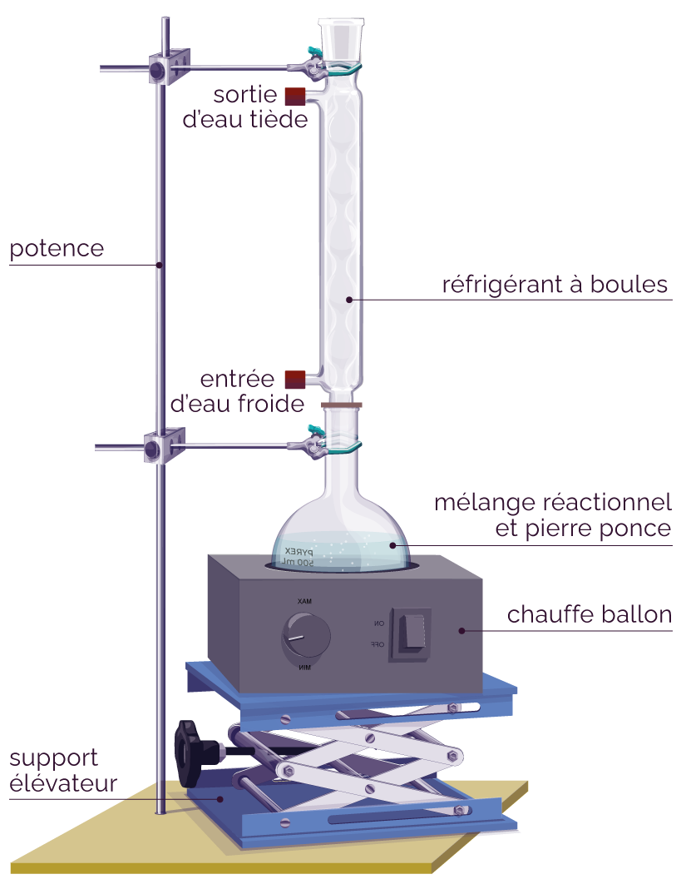
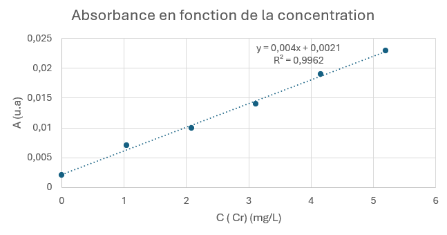
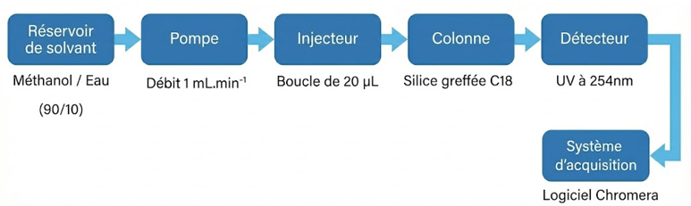
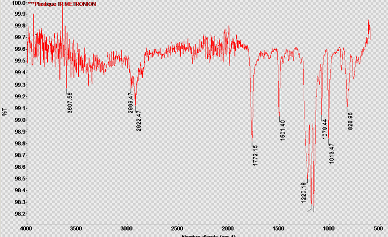

PORTFOLIO DE COMPÉTENCES
Bienvenue sur mon portfolio numérique. Ce site retrace mon parcours académique et professionnel, validant mes compétences de Technicien Supérieur à travers des exemples concrets issus de mes stages, de mon alternance et de mes travaux pratiques.
La Pratique en Chiffres
Profil & Projet Professionnel
Objectif : Devenir Ingénieur en Energétique avec un intérêt marqué pour l'optimisation des procédés industriels et les énergies bas-carbone.
Atouts & Savoir-être
- Autonomie
- Rigueur Scientifique
- Travail d'équipe
- Anglais Technique
🦺 Habilitations & Sécurité
- ⚡ B0/BR/BE Manoeuvre - Habilitation Électrique
Langues & Certifications
🎯 Centres d'intérêt
Sport d'équipe
Pratique du football en compétition. Développement de la résilience, de la communication et de l'esprit d'équipe.
Outils, Logiciels & Équipements
💻 Informatique & Logiciels
🔬 Parc Machines Industriel
Parcours & Expériences
Expériences Professionnelles
Maintenance préventive, maintenance corrective, diagnostic de pannes, instrumentation industrielle, amélioration continue.
Contrôle qualité des enrobés, réalisation d'essais normés, rédaction de comptes rendus de conformité.
Formation Académique
Spécialisation MAE (Mesures et Analyses Environnementales).
Mathématiques, Physique, Sciences de l'Ingénieur. Acquisition d'une forte capacité de travail.
Lycée François 1er. Spécialités : Mathématiques, Physique-Chimie.
Définition : Élaborer un protocole, collecter des données fiables et analyser les résultats selon les normes en vigueur.
Lien Projet Pro : C'est la base de mon travail de contrôle qualité chez Eiffage et de surveillance des process chez Heidelberg.
Preuve Académique : Analyse DCO (TP Qualité de l'eau)
Oxydation par dichromate à reflux selon la norme NF T90-101. Mesure d'une DCO de 84,3 mg/L, classant l'eau en "Mauvaise qualité".
📄 Voir le Rapport de TPMise en pratique : Eiffage Route
Cette rigueur d'application des protocoles normés s'est traduite directement lors de mon stage. J'ai mené des campagnes de mesures sur les enrobés (compacité, teneur en bitume). Savoir suivre une norme à la lettre (comme en chimie) m'a permis de rédiger des rapports de conformité fiables, garantissant que les matériaux livrés sur les chantiers respectaient le cahier des charges client.

Définition : Assurer la traçabilité des mesures, calculer les incertitudes et valider les instruments.
Preuve Académique : Validation méthode Chrome VI
Comparaison métrologique SAA vs Spectro UV-Visible. Calcul des Limites de Quantification (LQ = 6,06 µg/L en UV) pour le dosage de traces environnementales.
📄 Voir le Rapport de TPMise en pratique : Heidelberg Materials
La métrologie est cruciale en maintenance industrielle. J'applique cette compétence pour vérifier et étalonner les capteurs critiques (pression, température) sur les fours de la cimenterie. L'évaluation des incertitudes vue en IUT me permet d'identifier les dérives des capteurs et de les recalibrer avant qu'ils ne faussent les paramètres de production ou les bilans d'émissions.

Définition : Mettre en œuvre une chaîne d'instrumentation complexe (capteur, conditionneur, traitement).
Preuve Académique : Optimisation HPLC
Réduction de l'incertitude d'un facteur 7 (± 0,023 g/L) lors d'une analyse de phtalates par l'intégration d'un étalon interne pour corriger les dérives de l'appareil.
📄 Voir le Rapport de TPMise en pratique : Heidelberg Materials
Cette maîtrise de la chaîne d'acquisition est le cœur de mon alternance. Au quotidien, je dépanne des boucles de régulation (4-20 mA). La logique de diagnostic vue à l'IUT (isoler le capteur, vérifier le conditionneur, lire l'automate) me permet de cibler rapidement l'origine d'une panne sur les transmetteurs de niveau des silos ou les analyseurs de gaz du four.

Définition : Caractériser les propriétés d'un matériau par des méthodes complexes (Spectro, RX, Méca).
Preuve Académique : Identification Multi-Technique
Croisement de techniques (XRF, Spectro IR, Essais mécaniques) pour identifier formellement des matériaux inconnus (Inox 430, Polycarbonate).
📄 Voir le Rapport de TPMise en pratique : Eiffage Route
Lors de mon stage, j'ai adapté cette démarche multi-critères aux matériaux de construction. J'ai réalisé des analyses granulométriques et des essais de résistance mécanique sur les graves bitumes. Les concepts de comportement des matériaux vus en classe m'ont permis de mieux comprendre pourquoi une formulation d'enrobé risquait l'orniérage et comment l'ajuster.

Définition : Définir un cahier des charges répondant à des contraintes environnementales ou énergétiques.
Preuve Académique : Bilan Thermique (Calorimétrie)
Étude d'une combustion mettant en évidence 60% de pertes thermiques dans l'environnement, prouvant la nécessité de l'isolation.
📄 Voir le Rapport de TPMise en pratique : Heidelberg Materials
Ce résultat théorique prend tout son sens en cimenterie, une industrie très énergivore. Mon alternance m'amène à intervenir sur des projets d'efficacité énergétique, comme l'entretien des variateurs de vitesse des ventilateurs de tirage du four. Je fais directement le lien entre les pertes thermiques mesurées en TP et les actions de maintenance pour réduire l'empreinte carbone globale de l'usine.

🖨️ Astuce : Appuyez sur Ctrl + P (ou Cmd + P sur Mac) pour imprimer ou sauvegarder ce portfolio en version PDF optimisée.